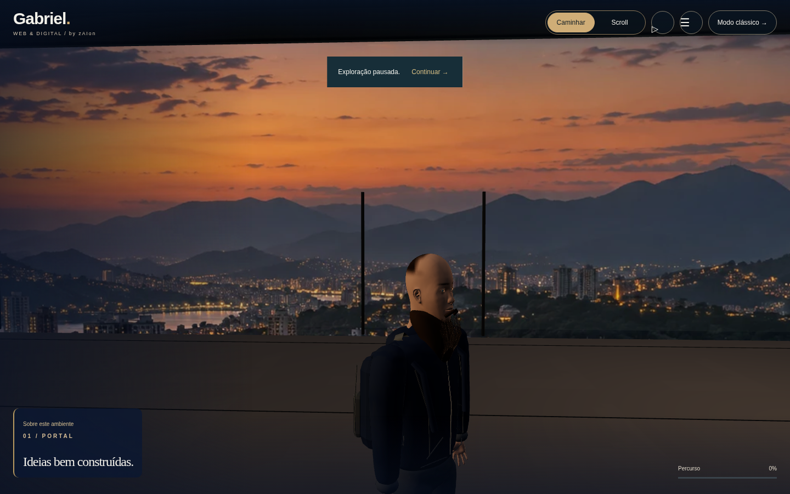
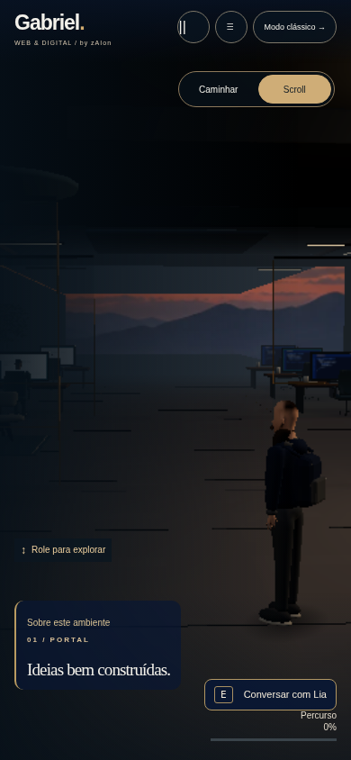
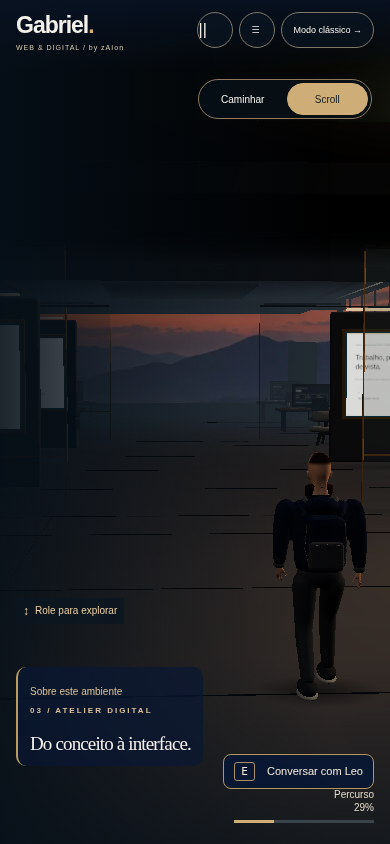

REVISÃO LOCAL · 28/10/2026 · SEM PUBLICAÇÃO
zAIon Virtual Studio
Continuação do escritório existente: arquitetura mais compacta, luminárias com suportes, mobiliário estofado CC0, anatomia adaptada e controles recolhidos. Estas imagens vêm do aplicativo em Chromium; não são renders de concept art.
Relatório completo · Auditoria inicial · Licenças e procedência
Antes e depois
Antes à esquerda · revisão à direita. Mesmas resoluções e parâmetros de câmera; profundidade mapeada à planta de 72 m e enquadramento intencionalmente ajustado.Personagem e materiais

Geometria completa, iluminação simplificada para software.LOD para qualidade baixa: rig e ações mantidos. Caminho PBR exercitado em SwiftShader, sem GPU física. A adaptação anatômica não equivale a uma cópia facial ou escaneamento.
Caminho PBR exercitado em SwiftShader, sem GPU física. A adaptação anatômica não equivale a uma cópia facial ou escaneamento.Emulação móvel

Entrada · viewport 390 × 844 com toque.
Atelier digital · interface recolhida.Medições e validação
Renderização por CPU SwiftShader na nuvem, não um telefone ou GPU desktop real. Amostras curtas de rolagem ativa; texturas estimadas pelas chamadas WebGL, não VRAM do driver. LCP mede conteúdo DOM; disponibilidade 3D é medida separadamente. Estes números não comprovam as metas de 50–60/30 FPS em hardware físico.
O que ainda difere das referências
Avatar estilizado com anatomia aberta adaptada, cabelo/barba e contato dos dedos simplificados; sem escaneamento, mocap ou expressões faciais por blendshapes. A planta mantém o eixo longitudinal e os seis setores. Não há path tracing ou GI baked. O panorama ilustra o exterior. A foto pessoal e os moodboards não fazem parte deste pacote.
Para visitar a versão completa extraída do ZIP: node INICIAR-REVISAO.mjs. Abra o endereço local exibido no terminal. O formulário prepara um rascunho em memória e não envia dados.